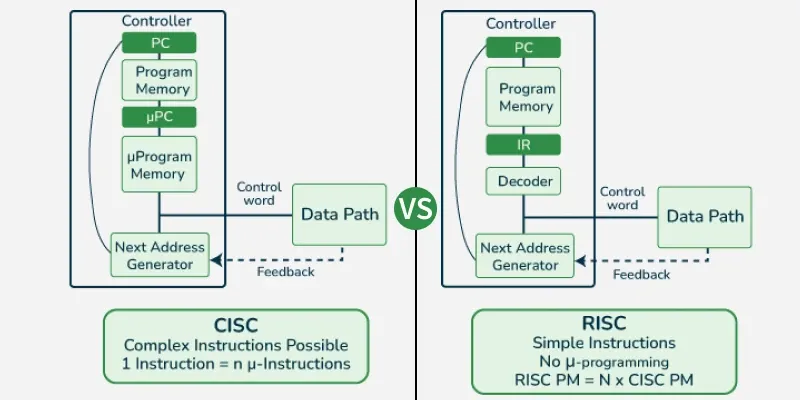

Arquitectura de Computadores: Arquitectura RISC-V
Por Eduard Gabriel Voicea
Introducción
RISC-V (pronunciado "risk-five") es una arquitectura de conjunto de instrucciones (ISA) de código abierto basada en los principios de los procesadores RISC (Reduced Instruction Set Computer). A diferencia de otras arquitecturas predominantes (como x86 de Intel/AMD o ARM), que son propiedad de empresas privadas y requieren el pago de licencias, RISC-V es un estándar libre que puede ser utilizado, modificado y distribuido sin costo alguno. Esta libertad elimina las barreras de entrada, impulsando una democratización y masificación en la creación de microprocesadores, permitiendo una mayor personalización y libertad para los desarrolladores.
Origen de RISC-V
El proyecto nació en el año 2010 en la Universidad de California, Berkeley, impulsado por investigadores como Krste Asanović y David Patterson (pionero principal en la creación de las primeras arquitecturas RISC en los años 80). El equipo universitario necesitaba desarrollar procesadores para investigación y docencia, pero las licencias restrictivas y la excesiva complejidad de las alternativas comerciales (como ARM y x86) lo hacían inviable. Por tanto, decidieron crear su propia ISA simple y abierta. En 2015, se fundó la RISC-V Foundation (ahora RISC-V International, con sede en Suiza) para blindar su desarrollo y mantener el estándar de manera neutral e independiente.
Características de RISC-V
Las principales virtudes técnicas y de diseño que definen a esta arquitectura son:
- Código Abierto (Open Source): La especificación completa de las instrucciones es pública, evitando el pago de regalías e incrementando la innovación colaborativa global.
- Diseño Base Modular: Cuenta con un núcleo de instrucciones base obligatorio muy estricto (menos de 50 instrucciones enteras). Las demás funciones se aplican en forma de extensiones conectables (suma de punto flotante, criptografía, operaciones vectoriales, etc.), permitiendo al fabricante incluir únicamente el hardware exacto que necesita.
- Simplicidad RISC: Elimina la sobrecarga de diseño de las arquitecturas CISC modernas, reduciendo significativamente la complejidad estructural del silicio para permitir tener menos consumo energético, transistores y costo de fabricación.
- Portabilidad y Escalabilidad: Es apto transversalmente tanto para microcontroladores diminutos para IoT, como para niveles de alto rendimiento como servidores e infraestructura Cloud.
La Filosofía RISC vs. CISC: ¿Por qué menos es más?

El impacto técnico de RISC-V radica en su drástica reducción de instrucciones frente a arquitecturas complejas tradicionales (CISC) como x86 de Intel/AMD. Mientras que el núcleo base de RISC-V (el estándar RV32I) opera con apenas 40 instrucciones fundamentales, las arquitecturas CISC acumulan miles de ellas debido a décadas de retrocompatibilidad.
En lugar de tener una instrucción hiperespecializada para cada tarea, RISC-V proporciona solo un conjunto esencial. Si un programa requiere una operación compleja, el compilador la traduce en una combinación de cuatro o cinco instrucciones básicas.
Ventajas tangibles en el hardware:
-
Eficiencia de silicio y térmica: Al decodificar solo 40 instrucciones, los circuitos lógicos son diminutos. Menos transistores significan chips mucho más baratos de fabricar y con una disipación de calor mínima.
-
Ejecución ágil (Un solo ciclo): Al ser instrucciones tan simples ("atómicas"), la inmensa mayoría se ejecutan en un solo ciclo de reloj, acelerando el cauce interno de la CPU (pipeline). En CISC, las instrucciones complejas tardan varios ciclos en resolverse.
-
Viabilidad académica: Esta limpieza arquitectónica permite que un estudiante diseñe, simule y sintetice un procesador RISC-V funcional en una FPGA durante un solo semestre universitario, algo inabarcable bajo la saturación y complejidad de un diseño x86.
¿Qué lo diferencia de la competencia?
Principalmente su naturaleza libre como modelo de negocio, pero también su limpieza técnica:
-
RISC-V vs ARM ARM es el rival más directo de RISC-V, ya que ambas arquitecturas se centran en la eficiencia y el bajo consumo energético. Donde RISC-V está ganando terreno rápidamente: Internet de las Cosas (IoT), automoción (microcontroladores para vehículos) y electrónica de consumo de bajo coste. Muchas empresas emergentes y consolidadas están abandonando los diseños básicos de ARM a favor de RISC-V para evitar pagar costosas licencias y obtener la libertad de personalizar sus chips. Aceleradores de Inteligencia Artificial y Servidores Cloud: En 2026, los grandes operadores de centros de datos y empresas de inteligencia artificial están utilizando RISC-V masivamente para crear chips coprocesadores a medida. Al ser abierto, permite añadir instrucciones específicas para IA sin pedir permiso a nadie. Donde ARM sigue dominando: Smartphones, tablets, relojes inteligentes y procesadores móviles de gama alta. ARM lleva décadas de ventaja en optimización y cuenta con un ecosistema de software maduro donde sistemas como Android e iOS están perfectamente integrados.
-
RISC-V vs. x86 (Intel y AMD) La competencia aquí es menos directa en el corto plazo, pero las barreras se están rompiendo. El feudo de x86: Intel y AMD siguen reinando de forma indiscutible en ordenadores de sobremesa, portátiles de alto rendimiento y servidores centrales. La arquitectura x86 está diseñada para la potencia bruta, cálculos muy complejos y cuenta con compatibilidad con el ecosistema Windows. La incursión de RISC-V: Aunque no verás un PC de escritorio con RISC-V superando a un Intel Core o un AMD Ryzen pronto, RISC-V está atacando los centros de datos desde un ángulo diferente: la eficiencia extrema. Se están integrando en redes y almacenamiento para reducir el inmenso consumo eléctrico de los servidores tradicionales x86.
Impacto y Evolución de RISC-V a Futuro
Su adopción ya está generando cambios estructurales en la industria semiconductora. Empresas de hardware de primer nivel han comenzado a sustituir microcontroladores internos de arquitecturas licenciadas por diseños propios en RISC-V, lo que les permite reducir costes y ganar autonomía técnica. En el plano geopolítico, la ausencia de restricciones de licencia convierte a RISC-V en una opción atractiva para gobiernos y bloques económicos — como la Unión Europea o China — que buscan reducir su dependencia tecnológica de corporaciones estadounidenses, especialmente en contextos de tensión comercial.
Ejemplos de Implementaciones Comerciales
La adopción real ya es omnipresente, escalada y demostrada en producciones comerciales y productos integrados muy representativos y pioneros en diferentes entornos:
-
Western Digital y Seagate: Ambos líderes empresariales en soportes de medios de la industria transicionaron en firme sus controladores subyacentes encargados de gestionar miles de millones de bloques físicos del hardware (operaciones Flash NAND en unidades SSD y cabezales en discos HDD) utilizando núcleos RISC-V.
-
SiFive: Es la entidad principal que desarrolla RISC-V de forma puramente productiva y comercial. Desarrollan la propiedad intelectual (IP) de formidables núcleos validados y perfeccionados, licenciando además modelos de arquitectura de prueba orientados hacia placas tangibles ("kits hardware" de desarrollo para programadores).
-
Alibaba: Codificaron y diseñaron su procesador más portentoso, el llamado chipset XuanTie 910, con fines centralizados y enfocados a proveer fuerza de cálculo virtual alojado hacia bases de datos o servicios para la "nube" del mercado asático de gran corporativismo abierto bajo licencia Open Source.
-
Qualcomm y Google: Qualcomm ha integrado núcleos RISC-V en sus SoC Snapdragon para gestionar funciones internas de bajo nivel, como la administración de energía y los subsistemas de conectividad, reduciendo así su dependencia de IP propietaria en componentes auxiliares. Por su parte, Google ha contribuido activamente al proyecto Android Open Source (AOSP) para garantizar compatibilidad oficial con la arquitectura RISC-V, sentando las bases para que futuros dispositivos Android puedan ejecutarse de forma nativa sobre procesadores de esta arquitectura.
Nomenclatura y Extensiones del Conjunto de Instrucciones
RISC-V utiliza un sistema de letras para definir las funcionalidades incluidas en un chip. La arquitectura base suele denotarse por su capacidad de procesamiento, como RV32I (32 bits y 32 registros) o RV64I (64 bits). A partir de ahí, se añaden letras para cada módulo soportado:
- M: Multiplicación y división entera.
- A: Instrucciones atómicas.
- F y D: Punto flotante de precisión simple y doble.
- C: Instrucciones comprimidas a 16 bits para ahorrar memoria.
La combinación estándar más común (I, M, A, F, D) se agrupa bajo la letra G (General), dando lugar a clasificaciones como RV32G o RV64G.
Ecosistema de Software y Herramientas (Toolchains)
El avance de RISC-V depende directamente de sus herramientas gratuitas y de código abierto:
-
Compiladores y Entornos: Plataformas como PlatformIO o Freedom Studio proporcionan entornos de desarrollo (IDE) completos para escribir código en C/C++ y cargarlo en las placas RISC-V.
-
Simuladores: Herramientas como Verilator (simulador de hardware) y Whisper (simulador de conjunto de instrucciones de Western Digital) permiten depurar el código en el ordenador sin necesitar el hardware físico.
-
Síntesis de Hardware: Para proyectos avanzados, entornos como Xilinx Vivado convierten código Verilog en configuraciones físicas (archivos bitstream).
Plataformas Hardware para Experimentación (Kits de Desarrollo)
El estudio y despliegue de RISC-V se materializa en diversas placas escalonadas según su nivel:
-
Nivel Básico (Internet de las Cosas e IA): Placas como la Seeed Maix BiT incluyen procesadores RISC-V potentes de doble núcleo (ej. Kendryte K210 a 400MHz) orientados a inteligencia artificial y visión artificial por apenas $25, programables directamente mediante MicroPython.
-
Nivel Medio (Sistemas Embebidos): Placas de desarrollo como las SparkFun RED-V, que integran el SoC Freedom Everywhere FE310 de SiFive. Están orientadas a la programación más técnica en lenguaje C y ensamblador.
-
Nivel Avanzado (Implementación en FPGA): Para quienes estudian la estructura profunda de un ordenador, existen implementaciones de núcleos lógicos (como el núcleo SweRV de Western Digital) embebidos dentro de FPGAs altamente avanzadas como la Digilent Nexys A7. Esto permite alterar físicamente el funcionamiento interno del procesador.
Ejemplo Práctico: Código C vs Ensamblador: RISC-V vs CISC
La principal característica de la arquitectura "Reduced Instruction Set" es su claridad computacional. Si escribimos un bucle clásico en lenguaje C:
Al pasarlo por el compilador, las instrucciones del bucle se traducen a lenguaje ensamblador de RISC-V. Un extracto lógico del control del bucle se vería así:
# Inicialización de registros
li a5, 0 # Carga Inmediata (Load Immediate): a5 = 0 (nuestro contador 'i')
li a4, 10 # Carga Inmediata: a4 = 10 (nuestro límite del bucle)
bucle:
bge a5, a4, fin # Salto Condicional (Branch if Greater or Equal): si a5 >= a4, salta a la etiqueta 'fin'
# [Aquí se ejecutaría la llamada a la función printf]
addi a5, a5, 1 # Suma Inmediata (Add Immediate): incrementa nuestro contador (a5 = a5 + 1)
j bucle # Salto Incondicional (Jump): vuelve al inicio de la etiqueta 'bucle'
fin:
li a0, 0 # Carga 0 en el registro de retorno para cumplir con "return 0"
ret # Retorno de subrutina
mov ecx, 0 ; Mueve el valor 0 al registro contador ecx (equivale a i = 0)
bucle:
cmp ecx, 10 ; Compara ecx con 10 (establece flags internos de la CPU)
jge fin ; Salta a 'fin' si ecx >= 10 (lee los flags, no los registros)
inc ecx ; Incrementa ecx en 1 — instrucción especializada inexistente en RISC-V
jmp bucle ; Salto incondicional al inicio del bucle
fin:
xor eax, eax ; Pone eax a 0 haciendo XOR consigo mismo (truco CISC para optimizar ciclos)
ret
Como se observa, RISC-V utiliza nemotécnicos muy limpios y fáciles de leer (li, bge, addi, j), a diferencia de la saturación de instrucciones complejas que se encuentran en arquitecturas antiguas como x86.
En un ejemplo tan sencillo no se aprecia la diferencia en simplicidad, pero si se aumenta la complejidad del código, la diferencia se hace evidente.
Conclusiones
RISC-V representa mucho más que una alternativa técnica a las arquitecturas propietarias existentes: supone el primer intento serio y consolidado de aplicar los principios del software libre al diseño de hardware a escala global. La analogía con Linux no es gratuita — así como ese sistema operativo rompió el monopolio del software de escritorio y de servidor, RISC-V aspira a hacer lo propio con el silicio, democratizando un eslabón de la cadena tecnológica que hasta ahora permanecía opaco y restringido. Si su ecosistema de compiladores, sistemas operativos y herramientas continúa madurando al ritmo actual, es razonable esperar que en los próximos años comience a presionar seriamente los duopolios de Intel/AMD y ARM en segmentos donde la eficiencia y la personalización pesan más que la retrocompatibilidad.
¿Quieres saber más?
Si te ha interesado el tema y quieres profundizar más en el ambito practico, te recomiendo visitar este enlace:
Esta guia te enseñara a programar en RISC-V y a crear tus propios procesadores bajo un presupuesto limitado.